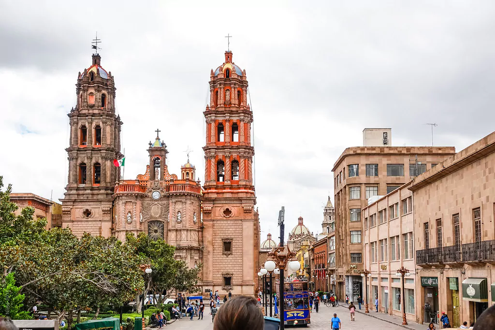

San Luis Capital es una ciudad ubicada en el centro-norte de México, fundada en 1592. Se encuentra en una de las zonas más ricas en minerales del país. Su nombre proviene del rey francés Luis IX y del hecho de que la región era rica en minerales de plata, oro y otros metales preciosos.
Los primeros habitantes de la región fueron los huachichiles, un grupo de cazadores y recolectores nómadas. En 1592, los españoles llegaron a la región y comenzaron a explotar los ricos yacimientos de plata. Y también en 1592, se fundó la ciudad de San Luis Minas del Potosí como centro minero.
Durante la época colonial, la ciudad de San Luis Capital se convirtió en uno de los centros económicos más importantes de México. La producción de plata, oro y otros metales preciosos atrajo a numerosos inmigrantes y se establecieron numerosos comercios y negocios en la ciudad.
Durante la Guerra de Independencia de México, San Luis Capital fue un importante centro de resistencia contra el gobierno colonial. En 1810, Miguel Hidalgo, uno de los líderes de la rebelión, se reunió con otros insurgentes en la ciudad antes de marchar hacia la Ciudad de México. En 1824, la ciudad se convirtió en la capital del estado de San Luis Potosí.
Durante el siglo XIX, San Luis Capital se convirtió en un importante centro de la industria textil y de la agricultura. En 1862, la ciudad fue ocupada por las fuerzas francesas durante la Guerra de Intervención Francesa.
En el siglo XX, la ciudad de San Luis Capital se convirtió en un centro importante de la industria automotriz. A inicios de este siglo General Motors construyó una planta en la ciudad, seguida por otras compañías automotrices. En 2012, la ciudad se convirtió en la sede del Centro de Investigación y Desarrollo de BMW para América Latina.
Hoy en día, San Luis Capital es una ciudad próspera y moderna, con una rica historia y patrimonio cultural. La ciudad cuenta con numerosos atractivos turísticos, incluyendo edificios coloniales, museos y parques. Además, la ciudad también es reconocida por su gastronomía y su animada vida nocturna.